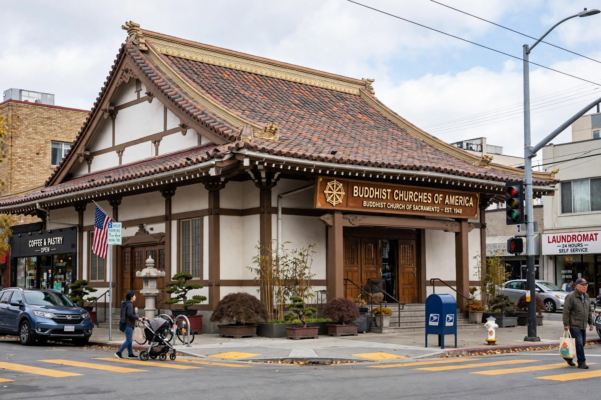

 A BCA temple in California | |
| Abbreviation | BCA |
|---|---|
| Formation | 1899 (as Buddhist Mission of North America); renamed 1944 |
| Type | Religious organization |
| Headquarters | San Francisco, California, U.S. |
| Tradition | Jōdo Shinshū (Pure Land) |
| Parent organization | Nishi Hongwanji, Kyoto, Japan |
| Institute | Institute of Buddhist Studies, Berkeley |
The Buddhist Churches of America (BCA) is a national organization of Jōdo Shinshū Pure Land Buddhist temples in the continental United States. Founded by Japanese immigrants, it is the oldest major Buddhist organization in the country, affiliated with the Nishi Hongwanji branch of Jōdo Shinshū in Kyoto, Japan. Its headquarters are in San Francisco, California.
In 1899, two missionaries from Japan's Nishi Hongwanji arrived in San Francisco and established the Buddhist Mission of North America, serving the growing Japanese immigrant community. Temples (initially called "missions" and later "churches") spread through California, the Pacific Northwest, and other regions as Issei communities formed. Services adopted some forms adapted to American religious life — pews, hymns sung to Western tunes, and Sunday dharma schools — while retaining the central practice of the nembutsu, the recitation of the name of Amida Buddha.
During the Second World War, following the internment of Japanese Americans, the organization was renamed the Buddhist Churches of America in 1944 at the Topaz concentration camp in Utah. Despite the loss of property and members' imprisonment, the churches became centres of community resilience, and after the war the BCA rebuilt and expanded.
The BCA comprises dozens of member temples grouped into districts, led by a bishop (sochō) and served by ministers trained at the Institute of Buddhist Studies in Berkeley, California, its affiliated seminary and graduate school. Teachings centre on Shinran's interpretation of the Pure Land path: reliance on the Primal Vow of Amida Buddha, expressed in the nembutsu, "Namu Amida Butsu."